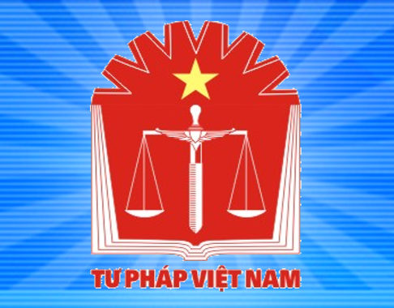

About the Project
In 2009, as part of Canada's new aid effectiveness agenda, Vietnam was selected as a country of focus for international development. Canada's current program in Vietnam responds to the Government of Vietnam's poverty reduction priorities and focuses on improving the enabling environment for investment and to support rural enterprise development and agricultural competitiveness.
The National Legislative Development Project (NLD) is designed to assist the Government of Vietnam (GOV) with reforming its law-making process and improving the quality of economic legislation. The NLD supports the GOV in developing a coherent, effective, and transparent legal framework that reflects the needs of Vietnamese citizens and supports equitable economic growth. The NLD addresses the entire law-making process, from policy planning, promulgating Legal Normative Documents (LNDs), to engaging its key institutions and components. According to the Law on Promulgation of Legal Normative Documents 2015 (LPLND), LNDs consist of any legal document that contains legal norms – binding rules of conduct by the state authority; this includes legislation, resolutions, etc.
Scope
To achieve its goals, NLD collaborates with state institutions that produce LNDs and are tasked with its implementation. Project activities are structured around the four core components of the law-making process:
- (1) strategic planning,
- (2) policy development,
- (3) legislative drafting, and
- (4) legal system coherence.
Four Core Components
- The Strategic Planning component focuses on improving the capacity of NLD partners to develop processes to identify, collect, and organize data needed for reforming and implementing legislation and regulation, to apply gender sensitive analysis, to monitor performance, and to report on results.
- The Policy Development component focuses on improving the capacity of NLD partners to conduct policy research and analysis, and consult with the public, and incorporate gender perspectives.
- The Legislative Drafting component focuses on improving the capacity of drafters to draft through standardization, including gender sensitive language, and ensure effective coordination between central and local levels government.
- The Legal System Coherence component focuses on increasing the capacity of NLD partners to ensure laws are consistent, organized, and accessible.
Gender Equality
Gender Equality (GE) has been enshrined in Vietnam’s Constitution and National Polices for more than two decades, but in practice, substantive equality is lagging behind. NLD’s mandate is to integrate gender equality as a cross cutting theme in all project activities by supporting the Vietnamese partners to apply the principles set out in domestic law and in international treaties ratified by Vietnam.
Strategy
The NLD was designed by the Department of Foreign Affairs, Trade and Development to be executed in two phases:
Phase 1 involved conducting a thorough review of the policy and law-making processes in Vietnam. This was done in parallel to the preparation of the new Law on Promulgation of Legal Normative Documents (LPLD) by the Ministry of Justice (MOJ) and the Law Committee. The review process helped to assess the current state of law making in Vietnam. This initial phase was completed on the 31 March 2015. For more information see the Summary Report on Phase 1 of NLD project .
Phase 2 is implemented through a detailed Work Break-down Structure (WBS) articulating the four initial components. It aims to improve the law-making process by making it more efficient and delivering quality legislation and regulations. The annual work plans for Phase 2 are developed based on discussions with partners to determine their needs to engage in the implementation and approvals of new procedures for policy development and legislative drafting.
Implementing Partners
In Vietnam: Ministry of Justice (lead partner); the Law Committee of the National Assembly; the Office of Government; Ministry of Finance; Ministry of Agriculture and Rural Development; and the Ministry of Industry and Trade.
In Canada: The Canadian Executing Agency is a consortium of the Canadian Bar Association (CBA), Ontario Justice International, Ministry of the Attorney General of Ontario, and Stikeman Elliott LLP.
Duration: 7 years, starting in 2013
Budget: CDN $15 million
Implementing Partners
In Canada: The Canadian Executing Agency is a consortium of the Canadian Bar Association (CBA), Ontario Justice International, Ministry of the Attorney General of Ontario, and Stikeman Elliott LLP.
In Vietnam: Ministry of Justice (lead partner); the Law Committee of the National Assembly; the Office of Government; Ministry of Finance; Ministry of Agriculture and Rural Development; and the Ministry of Industry and Trade.Partners in Vietnam
-

Ministry of Justice - moj.gov.vn
NLD holds close cooperation with several departments of the Ministry of Justice, including: Department of General Affairs on Legislative Development; Department of International Cooperation; Bureau of Legal Normative Documents Post-review and Institute of Legal Science.
The Ministry of Justice performs the state management on development and implementation of laws and regulations, post-review of legal normative documents, control of administrative procedures, and legal dissemination and education. The details of functions, tasks, powers and organizational structure of Ministry of Justice are presented in Decree No. 22/2013/ND-CP dated 13 March 2013 of the Government on the functions, tasks, powers and organizational structure of the Ministry of Justice.
-
Ministry of Finance - mof.gov.vn
The Ministry of Finance has the function of implementing the state management in finance, including: State budget, tax, fees and other revenues of the State budget, national reserve, State financial funds, financial investment, corporate finance and financial services.
The details of functions, tasks, powers and organizational structure of Ministry of Finance are presented in Decree No 215/2013/NĐ-CP dated 23 December 2013 issued by the Government on the functions, tasks, powers and organizational structure of the Ministry of Finance.
-
Ministry of Industry and Trade - moit.gov.vn
The Ministry of Industry and Trade performs the state management on industry and trade, including sectors such as renewable energy, petro-chemicals, mine exploration and minerals processing industries, food technologies and other processing technologies, e-commerce, trade services, international economic integration, competition management, anti-dumping, anti-subsidies, and consumer rights protection.
The details of functions, tasks, powers and oganizational structure of Ministry of Industry and Trade are presented in Decree 95/2012/NĐ-CP dated 12 November 2012 issued by the Government on functions, tasks, powers and organizational structure of Ministry of Industry and Trade.
-
Ministry of Agriculture and Rural Development - mard.gov.vn
Ministry of Agriculture and Rural Development (MARD) performs state management functions in the fields of agriculture, forestry, salt production, fishery, irrigation/water services and rural development nationwide.
The details of functions, tasks, powers and organizational structure of Ministry of Agriculture and Rural Development are presented in Decree 199/2013/ND-CP issued by the Government dated 26 November 2013 on functions, tasks, powers and organizational structure of Ministry of Agriculture and Rural Development.
-
Law Committee of the National Assembly
To facilitate the activities between Law Committee and NLD, Legal Department of the Office of National Assembly has been assigned to coordinate with NLD and be a primary partner of the project.
According to Law on amendment and supplement of Law on organization of National Assembly 83/2007/QH11, Law Committee is mandated to examine the Government of Vietnam's proposal on laws and ordinances development program. It oversees the operations of government institutions related to areas of the Committee's mandate. It makes recommendation to consolidate the state machinery and legal system.
-
Office of the Government
The Office of the Government (OOG) is the supporting mechanism for The Government and Prime Minister. It advises, supports the Government to organize activities, supports the Prime Minister and Vice Prime Minister, and manages missions of the Government.
The details of functions, tasks, powers and organizational structure of the Office of the Government are presented in Decree 74/2012/ND-CP issued by the Government dated 29th September 2012 on the functions, tasks, powers and organizational structure of the Office of the Government.
A brief introduction of all parties involved in the management of National Legislative Development Project (NLD)
Global Affairs Canada
Global Affairs Canada has the responsibilities for managing Canada's support and resources effectively and accountably to achieve meaningful, sustainable results, engaging in policy development in Canada and internationally, enabling Canada's effort to realize its development objectives.
In 2009, as part of Canada's new aid effectiveness agenda, Vietnam was selected as a country of focus for international development. Canada's current program in Vietnam responds to the Government of Vietnam's poverty reduction priorities and focuses on improving the enabling environment for investment and to support rural enterprise development and agricultural competitiveness.
Canadian Executing Agency (CEA)
The Canadian Executing Agency (CEA) of National Legislative Development Project is a consortium of the Canadian Bar Association (CBA), Ministry of the Attorney General of Ontario (MAG) and Stikeman Elliot LLP (SE). CEA was contracted as the Consultant of NLD Project by Department of Foreign Affairs, Trade and Development of Canada on March 29th 2012.
The Canadian Bar Association is a professional, voluntary organization which was formed in 1896, and incorporated by a Special Act of Parliament on April 15, 1921. Today, the Association represents some 37,000 lawyers, judges, notaries, law teachers, and law students from across Canada. Approximately two-thirds of all practicing lawyers in Canada belong to the CBA. The mandate of the Canadian Bar Association is to improve the law; improve the administration of justice; improve and promote access to justice; promote equality in the legal profession and in the justice system; improve and promote the knowledge, skills, ethical standards and well-being of members of the legal profession; represent the legal profession nationally and internationally; and promote the interests of the members of The Canadian Bar Association.
The Ministry of the Attorney General of Ontario is responsible for providing a fair and accessible justice system which reflects the needs of the diverse communities it serves across government and the province. The Ministry delivers and administers a wide range of justice services including: administering approximately 115 statutes; conducting criminal proceedings throughout Ontario; providing legal advice to, and conducting litigation on behalf of, all government ministries and many agencies, boards and tribunals; providing advice on, and drafting, all legislation and regulations; and coordinating and administering court services throughout Ontario.
Stikeman Elliott is one of Canada's leading business law firms, recognized for top tier services in each of their core practice areas - corporate finance, M&A, real estate, corporate-commercial law, banking, structured finance, tax, insolvency, competition and foreign investment, employment and business litigation. The firm plays the role as a PR agency for NLD Project. Stikeman Elliot was a key actor in managing the Policy Implementation Assistance Project (PIAP) in Vietnam from 1996 to 2013.
The organizational chart of Canadian Bar Association - CBA International initiatives

Project Steering Commitee (PSC)
Project Steering Committee (PSC) has the responsibilities for: reviewing and monitoring the operating context of the Project, and the Project's basic assumptions, risks, and continued relevance; reviewing progress made toward the achievement of expected results in the Project both at the immediate outcome and intermediate outcome levels; reviewing and recommending amendments; reviewing and recommending approval for the annual work plans, results targets, budget allocations, and the schedule for the forthcoming fiscal year; resolving any policy level problems that may impede the implementation of the Project; and providing policy guidance, interpretation and advice.
The Project Steering Committee (PSC) meetings are chaired by both Global Affairs Canada (GAC) and Ministry of Justice (MOJ) and to discuss project performance to date, identify new issues or areas of intervention, provide overall direction and feedback to the project, and approve annual work plans.
Project Management Unit
Project Management Unit (PMU) is based at Ministry of Justice with the head being a Deputy Director General of International Cooperation Department of MOJ. The PMU is the focal point working with NLD Office on both administrative and technical aspect and supporting NLD to cooperate with other partners and stakeholders of the project.
NLD Office
The field office is based at Prime Center, 53 Quang Trung, Hanoi. It plays an essential role in the implementation of the project. A project team has gradually been built up with a group of capable and enthusiastic people: 1 field manager, 3 program officers, 1 knowledge management and communications officer, 3 administrative and finance officers. This team contributes to the achievements of the project, along with the direct guidance from Canadian Executing Agency based in Canada and support from the Global Affairs Canada.

(From Annex I to Semi-annual report of NLD project from 1st April to 30th September 2015)